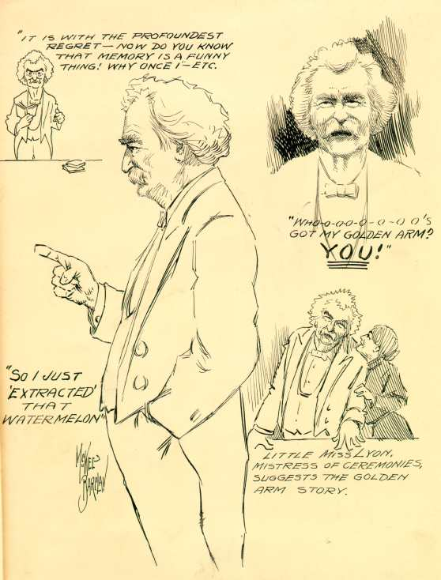

|
There is very little information about this drawing in the Barrett Collection, but as a picture it is worth a lot of words. It catches MT from several angles, and in the midst of several stories, while giving one of his typical late performances. The presence of "Miss Lyon" dates this from the early 1900's, and suggests one of the informal performances he gave at his last home, in Connecticut. The tales he's telling include the watermelon story (My First Theft), and the golden arm -- the story he uses as the ultimate test of a platform entertainer's art in "How to Tell a Story," and a piece he performed probably several hundred times.  |